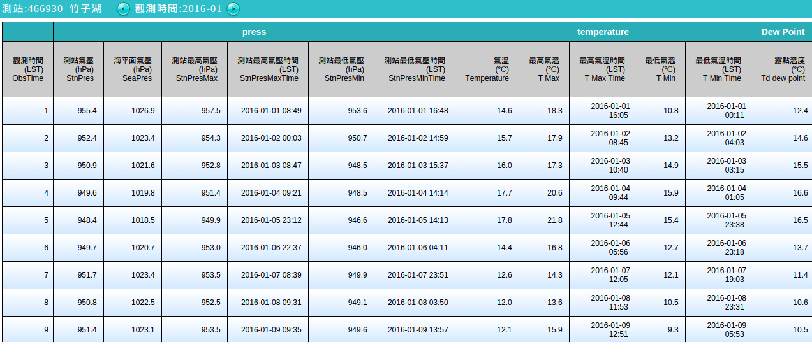

XY 點散佈圖
Contents
7. XY 點散佈圖#
注意
本教學適用於 GMT 6 的現代模式。如須參閱 GMT 6 (傳統模式) 與 GMT 4-5 繪製相似地圖的教程，請至這裡。
在數據分析中最重要也最常用的圖表形式，非 XY 散佈圖莫屬。雖然 GMT 是繪製地圖的專門工具，但它仍然能處理跟地理空間無關的資料，並做出精美的視覺化分析。在本章中，將會解說用來繪製點、線、面的重要指令 plot (舊版 GMT 內為 psxy)，以及一些衍伸的作圖設定技巧。這些技巧在處理地理空間資料時也都適用。
7.1. 目標#
使用台灣中央氣象局的氣象資料，製作風速 (Wind Speed) 對氣溫 (Temperature) 的 XY 散佈圖。圖中使用了 2016 年 1 月，位於竹子湖 (Zhuzihu) 與蘇澳 (Su’ao) 兩個測站的每日資料，並用不同顏色與不同標記表示。在圖中可以看出幾點有趣的事情：
風速與氣溫看來呈現負相關，也就是說，氣溫越低，風速越快。
一般來說，竹子湖的氣溫要比蘇澳來得冷一點，而且蘇澳在一月份還有超過攝氏 20 度以上的日子。
竹子湖有一天的溫度掉到了攝氏 0 度以下。事實上，這天是竹子湖睽違了 11 年後，再度下雪的日子1。這些受「超級寒流」影響的資料點，看起來就像是整個負相關趨勢的離群值。
{kind=link}
直接觀看指令稿
7.2. 使用的指令與概念#
info- 查閱純文字格式數值資料檔的基本資訊plot- 繪製點、線與多邊形basemap- 設定繪圖區、座標軸與邊框text- 在圖上標記文字外部指令
echo- 把資料輸入到管線命令中GMT 共用選項：
-JX(直角座標作圖)如何輸入 ASCII (純文字) 格式的資料到 GMT 中
如何從螢幕或腳本輸入資料到 GMT 中 (標準輸入重導向)
繪製 XY 散佈圖
設定座標軸標籤與特殊文字的處理方法
製作簡易的圖例
7.3. 前置作業#
我們這次使用的資料是中央氣象局的天氣觀測紀錄。這些資料可以從中央氣象局建置的「觀測資料查詢系統」取得。選擇位於臺北市 (TaipeiCity) 的竹子湖 (ZHUZIHU) 測站，資料格式為「月報表」，時間為 2016 年 1 月，按下查詢鈕後，應該會看到如下頁面：
把表格全選後複製貼上到 Microsoft Excel 或 Libre Office Calc 之類的試算表軟體，資料就會自動對到不同的欄位。接下來，你可以選擇以下兩種作法的任一種：
直接在試算表軟體中刪除不要的資料，只留「氣溫」與「風速」兩欄。把第一列「檔頭列」(也就是欄位名稱) 也刪除，接著「另存新檔」為逗號分隔檔 (
.csv檔)。把第一列「檔頭列」(欄位名稱) 刪除，「另存新檔」為逗號分隔檔 (
.csv檔)，再使用 shell 指令操作逗號分隔檔。例如在大部分的 Linux shell 下，可以使用$ cut -d ',' -f 8,17 你的檔案.csv > zzh.txt
其中第 8 欄和第 17 欄分別就是「氣溫」與「風速」的資料。
處理完的 zzh.txt 檔可以直接使用文字編輯器打開，前幾欄應該會長這樣
14.6,3.6
15.7,0.2
16,0.3
17.7,0.3
17.8,0.7
# ....以下略....
# 第 1 欄：氣溫 (攝氏)；第 2 欄：風速 (公尺/秒)
如此一來資料就整理成 GMT 的輸入格式了。再次使用同樣流程，可以取得位於宜蘭縣 (YiLanCounty) 的蘇澳 (SU-AO) 測站的相同資料，把它命名為 suao.txt。GMT 並不依據副檔名讀取純文字資料，但是相對的，它只接受四種欄位分隔符號：空格、Tab、逗號與分號。在把資料輸入 GMT 前，務必確認你的資料能被 GMT 正確讀取。
小訣竅
事實上，你也可以不用刪除任何檔頭和欄位，只要把資料存成 .csv 檔或其他 GMT 能接受的純文字格式，GMT 自己就有帶有功能選項來讀取資料表中的特定欄位，請參考 GMT 官方手冊的說明。
為了方便起見，你也可以直接從以下連結取得本章節會使用的檔案：
7.4. 操作流程#
plot 是用來把點資料描繪到地圖上的工具。對於一般不與地理座標相關的資料，在畫圖時的 -J 選項是 -JX，GMT 會使用單純的直角座標來畫圖。至於要怎麼決定 -R 的範圍？你可以先使用 GMT 內附的 info 指令簡單地查閱一下純文字資料的資訊，像這樣：
$ gmt info zzh.txt
zzh.txt: N = 31 <-0.4/17.8> <0.2/6.3>
# 檔名 資料點數 第一欄最小/最大值 第二欄最小/最大值
由於第一和第二欄的數值會分別被用在 x 軸和 y 軸，我們馬上就可以依照最大和最小值決定 -R 的範圍。info 指令也可以接受多於一個的輸入檔，只要所有檔案的欄位數量相同即可。如下所示：
$ gmt info zzh.txt suao.txt
dataset: N = 62 <-0.4/21.6> <0.2/6.3>
# 資料點數 第一欄最小/最大值 第二欄最小/最大值
依照 info 的輸出資料，我們可以知道所有的資料點一定能畫在 -R-1/23/0/7 的範圍內 (x 從 -1 至 23，y 從 0 至 7)。馬上來畫畫看我們的資料：
$ gmt plot zzh.txt -R-1/23/0/7 -JX15c -Bafg -png zzh

雖然資料是畫上去了，不過這並不是我們想要的樣子…這是因為 plot 的預設繪圖模式為折線圖，會把所有的點以線連接起來，如果我們只想要 plot 畫點，必須要加上 -S 選項。此選項除了使 plot 轉換成散佈圖模式外，還可以使用以下語法設定資料點的樣式：
-S代號[尺寸]
代號 為單一字元的符號，而尺寸指定的東西則依符號的不同而不同。完整的代號列表可以在 plot 的說明頁面找到。舉個例子，-Sc0.25c 是把資料點設為直徑為 0.25 cm 的圓形 (c，circle)，而 -Sd3c 則是外接圓直徑為 3 cm 的菱形 (d，diamond)。如果不給尺寸的話，GMT 會尋找資料檔案中的第三欄，並且以其數值當作對應的資料點的尺寸。這個規則在我們要畫不同大小的資料點時，非常方便。在這裡，我們的資料只有 x 與 y 兩欄，因此把所有的點設成一樣大小就行了。另外，你會發現繪圖區目前是 15 cm x 15 cm 的正方形，如果你想要任意調整 X 或 Y 軸的長度的話，需要在 -JX 後分開指定，如 -JX15c/10c 會把 X 軸設成 15 cm，Y 軸設成 10 cm。讓我們使用以上新增的選項，重畫一次看看：
$ gmt plot zzh.txt -R-1/23/0/7 -JX15c/10c -Sc0.35c -G#58C73A -W0.03c,black -Baf -png zzh
# -G: 標記填色
# -W: 標記外框畫筆

選擇了適當的標記樣式與填色，與粗一點的標記框線，看起來就會美觀許多。
plot 除了可以從檔案中讀取資料外，也可以從標準輸入 (standard input, stdin) 讀取資料。這樣一來，我們就可以直接在腳本或命令列中給定座標點。常見的作法有兩種：
使用管線命令，把前一個指令的輸出傳給
plot。例如在各種作業系統終端機都有的echo指令：$ echo "10.2 3.2" | gmt plot -選項們
如此一來，(10.2, 3.2) 就會被當成座標點畫在圖上。
使用標準輸入重導向搭配結束的輸入字元 (
<<符號)：$ gmt plot -選項們 << END ...任意的多行資料... END
在
<<符號後可以為任意的字符串，此例為END。從下一行開始，一直到第二個END的前一行，都會被當作plot的輸入資訊。
為了完成本章目標，我們需要在 x = 0 之處畫一條灰色的垂直虛線，以表明有一個點溫度低於零度。運用 plot 預設的繪線模式與上述的第二種作法，就可以簡單的畫出。在以下的腳本中，我們順便把第二組數據也畫上去了，使用標記是藍色的菱形：
# ==== 設定變數 ====
zzh='zzh.txt'
suao='suao.txt'
gmt begin windspeed_vs_temperature png
# ==== 繪點 ====
gmt plot $zzh -R-1/23/0/7 -JX15c/10c -Sc0.35c -G#58C73A -W0.03c,black -Baf
gmt plot $suao -Sd0.35c -G#3A6BC7 -W0.03c,black
# ==== 灰色垂直虛線 ====
gmt plot -W0.03c,100,-- << LINEEND
0 0
0 7
LINEEND
gmt end
這條灰色的線寬度是 0.03 cm，並且連接 (0, 0) 與 (0, 7) 兩點。
注意
注意在輸入多行資料的時候，資料和結束字元前面不能有任何空格，這就是為什麼以上的腳本有三行不縮排的原因。如果你覺得這樣不美觀，可以使用另一種標準輸入重導向字元 <<-，不過你的縮排字符限定只能使用 tab，如下所示：
# (前略)
gmt begin windszzh.txtpeed_vs_temperature_gmt6 png
# ==== 繪點 ====
gmt plot $zzh -R-1/23/0/7 -JX15c/10c -Sc0.35c -G#58C73A -W0.03c,black -Baf
gmt plot $suao -Sd0.35c -G#3A6BC7 -W0.03c,black
# ==== 灰色垂直虛線 ====
gmt plot -W0.03c,100,-- <<- LINEEND
0 0
0 7
LINEEND
gmt end
<<- 重導向字元會把資料結束字元前面的 tab 區塊移除，使 LINEEND 結束字元能夠正確的被讀取。

備註
plot 無法同時畫線又畫點。如果你有這方面的需求 (例如繪製折線圖)，需要使用兩次 plot 指令，畫完線後再把點也標上去。
不知你是否覺得，以上腳本實在說不上美觀，要改動也很麻煩？問題的原因，出在第一個 plot 指令。為了設定 -R、-J 與一些額外設定，第一個 plot 指令硬是會比第二個 plot 要長。考慮到這兩個指令在繪圖中有等量的效果 (都是畫上一組數據的散佈圖)，如果有更適當的方式，能夠先把該設定的選項設定好，讓兩個 plot 的效果看起來更直觀就好了。
這時候，總算輪到 basemap 指令上場！basemap 是專門用來設定底圖與邊框樣式的指令。在短的腳本中，我們可以透過其他指令附帶的 -B 或是其他選項來設定底圖與邊框，但是當腳本一長，或是當你想要調整許多有關的預設選項時，使用 basemap 可以讓你的腳本看起來更清晰易懂。讓我們再次回到這兩行指令
gmt plot $zzh -R-1/23/0/7 -JX15c/10c -Sc0.35c -G#58C73A -W0.03c,black -Baf
gmt plot $suao -Sd0.35c -G#3A6BC7 -W0.03c,black
我們可以把地圖的通用選項移到 basmap 中，因此以上指令也可以寫成這樣
gmt basemap -R-1/23/0/7 -JX15c/10c -Baf
gmt plot $zzh -Sc0.35c -G#58C73A -W0.03c,black
gmt plot $suao -Sd0.35c -G#3A6BC7 -W0.03c,black
如此一來，兩行 plot 指令各自的功用就一目了然：它們只是處理並繪製不同的資料點，但繪製的方法是相同的。你可以把所有選項與語法格式都互相對齊以求美觀，而所有通用的設定，包括 -R、-J、-B 等，全部都丟到 basemap 就對了。
現在腳本的第一個指令是以 basemap 開頭。當然，我們可以在這個指令中一併設定標題與座標軸標籤。在「製作第一張地圖」中，我們有提到標題可以使用 -B+t 添加，而在「色階檔的編修與呈現」中，我們也提到了要使用 -B[x或y]+l 添加座標軸的標籤。因此，我們就來添加一些文字說明吧：
# ==== 設定變數 ====
zzh='zzh.txt'
suao='suao.txt'
zzh_style="-Sc0.35c -G#58C73A -W0.03c,black"
suao_style="-Sd0.35c -G#3A6BC7 -W0.03c,black"
gmt begin windspeed_vs_temperature png
# ==== 版面與作圖區設定 ====
# -Baf 現在拆成了 -Bxaf 與 -Bya2f，
# 你可以分開給定 x 軸與 y 軸的 a、f、g 選項！
gmt basemap -R-1/23/0/7 -JX15c/10c -B+t"January 2016" \
-Bxaf+l"Temperature (degree C)" -Bya2f+l"Wind Speed (m s-1)"
# ==== 繪點 ====
gmt plot $zzh $zzh_style
gmt plot $suao $suao_style
# ==== 灰色垂直虛線 ====
gmt plot -W0.03c,100,-- << LINEEND
0 0
0 7
LINEEND
gmt end
以上腳本的出圖如下：

嗯，座標軸標籤會同時出現在上下及左右兩邊，看起來有點多餘；另外，縱軸的單位 m s-1 (公尺/秒) 的 -1 應該要上標，才是正確的寫法。除此之外，如果 degree C 能夠直接表示成 °C 的話，更顯得簡潔有力。要做到以上修改並不困難，首先，我們可以使用 -BWSne 選項讓左邊和下方顯現座標軸和其標籤，而右邊和上方只顯示座標軸。如果要在文字中顯示上下標，需要加上 GMT 專用的控制字元 @。@+ 是上標，@- 則是下標。被上下標控制字元包起來的字就會顯示為上下標。因此，我們只要把 m s-1 改成 m s@+-1@+ 即可。攝氏度數的符號也可以使用此控制字元來顯示，代號是 @.。
小訣竅
嚴格說來，@+ 控制的是上標的開啟與關閉，因此 m s@+-1 其實就能使 -1 上標。然而，筆者建議還是養成良好習慣，頭跟尾都加上控制字元，不只易於判讀跟修改，也跟 LaTeX 的語法概念類似。有關控制字元可操作的其他字串設定，請參考 GMT Cookbook。
把以上更動整理到腳本中，「版面與作圖區設定」的部份就會變成這樣：
# ==== 版面與作圖區設定 ====
gmt basemap -R-1/23/0/7 -JX15c/10c -BWSne+t"January 2016" -Bxaf+l"Temperature (@.C)" -Bya2f+l"Wind Speed (m s@+-1@+)"
修改後的座標軸看起來就清爽多了！

為了完成 XY 散佈圖，我們最後還得加上圖例，告訴讀者兩筆不同資料代表的意義。GMT 本身其實備有 legend 指令，用來繪製豪華的圖例，但在本例子中，我們將會示範另一種比較「土法煉鋼」，但是較為直觀的作法，這種作法對於簡單的圖例繪製是綽綽有餘。首先，我們要畫一個圖例框架，plot 又會再次派上用場。如果要用 plot 畫封閉的多邊形，只要指定所有的頂點座標，然後輔以 -G 指定填色，圖中所有的頂點就會連起來形成多邊形。以下的腳本片段，會以 (16, 5)、(22, 5)、(22, 6.5) 和 (16, 6.5) 為頂點，畫一個顏色為 #E6F4F2 的矩形。你可以把此片段插在 gmt end 之前：
# ==== 圖例框與圖例內容 ====
gmt plot -W0.05c,black -G#E6F4F2 << BOXEND
16 5
22 5
22 6.5
16 6.5
BOXEND
接下來，圖例框中需要放入之前使用過的符號與相對應的文字說明。符號同樣可以透過 plot 繪製，這次我們使用 echo 指令與管線命令，來把前面用的符號畫到圖例框中。當然，你必須要自己決定符號出現的座標，如下所示：
echo "17 6.05" | gmt plot $zzh_style
echo "17 5.45" | gmt plot $suao_style
畫完符號後，只要再標上文字說明，本章目標就大功告成。GMT 具有 text 指令，可以在指定的座標擺上給定的文字。text 的用法與 plot 極為相似，只不過至少要有三欄輸入資料，前兩欄為 xy 座標，第三欄為欲顯示的文字。另外，text 還具有專有的文字格式調整選項 -F。-F 下比較重要的選項為
-F+f[字形屬性]+j[對齊錨點位置] # 實際上不只這些，但其餘暫略
其中 字形屬性 的給定方法非常類似畫筆屬性，由 字體大小,字體名稱,顏色 三個參數所構成。這裡我們暫時只改動字體大小為 14 點 (14p)，其餘維持預設。(更多給定字形屬性的細節請參閱版面設計與地圖的幾何布局)。對齊錨點位置 則是沿用上一章「畫筆與調色技巧」提到的九宮格錨點位置來告訴 GMT 文字的對齊方法，例如我們等下要使用的 +jML 會讓文字「靠左對齊、垂直置中」給定的座標點。輸入文字的指定整體來看就如下所示：
echo "18 6.05 Zhuzihu" | gmt text -F+f14p+jML
echo "18 5.45 Su'ao" | gmt text -F+f14p+jML
第一行會把 (18, 6.05) 設為 Zhuzihu (竹子湖) 文字的最左側，而第二行則是使用相同的指令設定 Su'ao (蘇澳) 文字出現的地方，圖例到此就設計完成！
小訣竅
text 也可以讓使用者一次輸入多個字串，所以其實這兩行 text 指令也可以寫成
gmt text -F+f14p+jML << TEXTEND
18 6.05 Zhuzihu
18 5.45 Su'ao
TEXTEND
兩種寫法效果一模一樣，端看你喜歡哪種都可以。事實上，text 也接受多欄的輸入，這樣一來你可以把所有想輸入的文字都寫在檔案內，再分別指定不同的顏色、文字格式等等。詳細說明請參閱版面設計與地圖的幾何布局。
7.5. 指令稿#
本地圖的最終指令稿如下：
# ==== 設定變數 ====
zzh='zzh.txt'
suao='suao.txt'
zzh_style="-Sc0.35c -G#58C73A -W0.03c,black"
suao_style="-Sd0.35c -G#3A6BC7 -W0.03c,black"
gmt begin windspeed_vs_temperature png
# ==== 版面與作圖區設定 ====
gmt basemap -R-1/23/0/7 -JX15c/10c -BWSne+t"January 2016" -Bxaf+l"Temperature (@.C)" -Bya2f+l"Wind Speed (m s@+-1@+)"
# ==== 繪點 ====
gmt plot $zzh $zzh_style
gmt plot $suao $suao_style
# ==== 灰色垂直虛線 ====
gmt plot -W0.03c,100,-- << LINEEND
0 0
0 7
LINEEND
# ==== 圖例框與圖例內容 ====
gmt plot -W0.05c,black -G#E6F4F2 << BOXEND
16 5
22 5
22 6.5
16 6.5
BOXEND
echo "17 6.05" | gmt plot $zzh_style
echo "17 5.45" | gmt plot $suao_style
echo "18 6.05 Zhuzihu" | gmt text -F+f14p+jML
echo "18 5.45 Su'ao" | gmt text -F+f14p+jML
gmt end
備註
「以兩個不同氣象站的 2016 年 1 月風速與氣溫觀測資料，繪製 XY 散佈圖。攝氏 0 度以灰色垂直線表示。圖例、座標軸皆已清楚的標示。」
觀看最終版圖片
7.6. PyGMT 指令稿#
使用 PyGMT，可以如下腳本繪製本地圖：
import pygmt
import numpy as np
# 需要 Numpy 來讀取檔案中的資料
# ==== 設定變數 ====
# 我們使用 numpy.loadtxt 載入資料表，然後資料點樣式使用 Python 的 Dictionary 來指定。
zzh = np.loadtxt('zzh.txt', delimiter=',')
suao = np.loadtxt('suao.txt', delimiter=',')
zzh_style = {'style': 'c0.35c', 'color': '#58C73A', 'pen': '0.03c,black'}
suao_style = {'style': 'd0.35c', 'color': '#3A6BC7', 'pen': '0.03c,black'}
fig = pygmt.Figure()
# ==== 版面與作圖區設定 ====
fig.basemap(region=[-1, 23, 0, 7], projection='X15c/10c', frame=['WSne+t"January 2016"', 'xaf+l"Temperature (@.C)"', 'ya2f+l"Wind Speed (m s@+-1@+)"'])
# ==== 繪點 ====
fig.plot(data=zzh, **zzh_style)
fig.plot(data=suao, **suao_style)
# ==== 灰色垂直虛線 ====
fig.plot(x=[0, 0], y=[0, 7], pen='0.03c,100,--')
# ==== 圖例框與圖例內容 ====
fig.plot(x=[16, 22, 22, 16], y=[5, 5, 6.5, 6.5], pen='0.05c,black', color='#E6F4F2')
fig.plot(data=[[17, 6.05]], **zzh_style)
fig.plot(data=[[17, 5.45]], **suao_style)
fig.text(x=18, y=6.05, text='Zhuzihu', font='14p', justify='ML')
fig.text(x=18, y=5.45, text="Su'ao", font='14p', justify='ML')
fig.show()
fig.savefig('windspeed_vs_temperature_pygmt.png')
你可以使用以下的 Binder 連結嘗試此程式碼：
7.7. 習題#
本章使用的資料事實上是依照時間排序的，每日只有一個測量數值。因此，請利用本章中提供的數據，畫出竹子湖與蘇澳測站在 2016 年 1 月份的氣溫每日變化的折線圖。
請利用
plot畫出「大衛之星」。